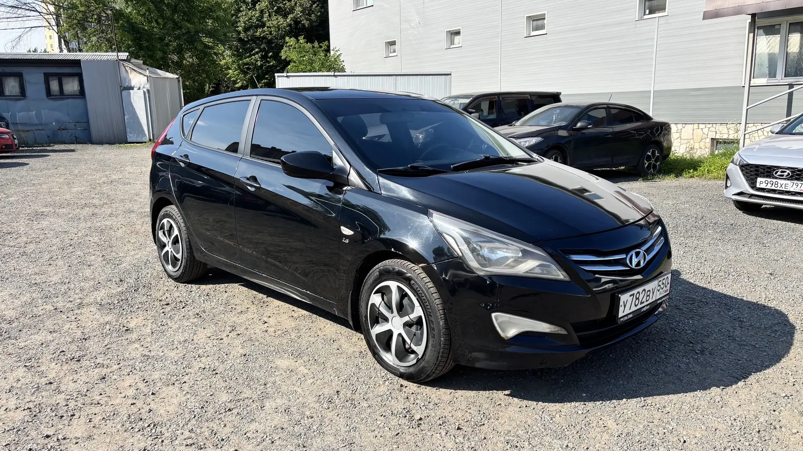

Фотографии этого автомобиля. Кузов и салон без ретуши.
Hyundai Solaris 2016
Чёрный хэтчбек
Аренда с последующим выкупом. Уточните наличие и договоритесь об осмотре и тест-драйве.
- Первоначальный взнос50 000 ₽
- Ежемесячный платёжПо расчёту
- Срок выкупа12–36 месяцев
- ГрафикЕжемесячно
Платёж фиксируется в договоре. Ниже приведены суточные тарифы из объявления.
Уточнить условия в WhatsAppТарифы по срокам выкупа
| Срок | Тариф в сутки | За 30 дней* |
|---|---|---|
| 12 месяцев | 2 900 ₽ | 87 000 ₽ |
| 18 месяцев | 2 200 ₽ | 66 000 ₽ |
| 24 месяцев | 1 900 ₽ | 57 000 ₽ |
| 30 месяцев | 1 700 ₽ | 51 000 ₽ |
| 36 месяцев | 1 500 ₽ | 45 000 ₽ |
*Арифметический ориентир: суточный тариф × 30 дней. Это не утверждённый ежемесячный платёж. Точную сумму, даты оплаты и полную стоимость выкупа согласуем в договоре.
Характеристики
Hyundai Solaris 2016 года с двигателем 1,6 л и автоматической коробкой. Пятидверный хэтчбек для ежедневных поездок по городу. Посмотрите фотографии со всех сторон, салон и показания одометра. Первый взнос 50 000 ₽, срок выкупа от 12 до 36 месяцев.
- КузовХэтчбек
- Коробка передачАвтомат
- Пробег по объявлению317 963 км
- Одометр на фотографии317 963 км
- Год выпуска2016
- Двигатель1,6 л
- Использование в таксиЗапрещено
Показание одометра приведено по фотографии. Текущий пробег и точную комплектацию уточните перед визитом.
Осмотр и условия
Приезжайте в Балашиху, Лукино, 84. Можно осмотреть кузов, салон и пройти тест-драйв. Для рассмотрения заявки нужны паспорт и водительское удостоверение, стаж от трёх лет.
ОСАГО в первый год оплачивает компания. Далее расходы несёт клиент. Без ограничения пробега, для поездок по Москве и области. Выезд за пределы МО по согласованию.
Все условия договора